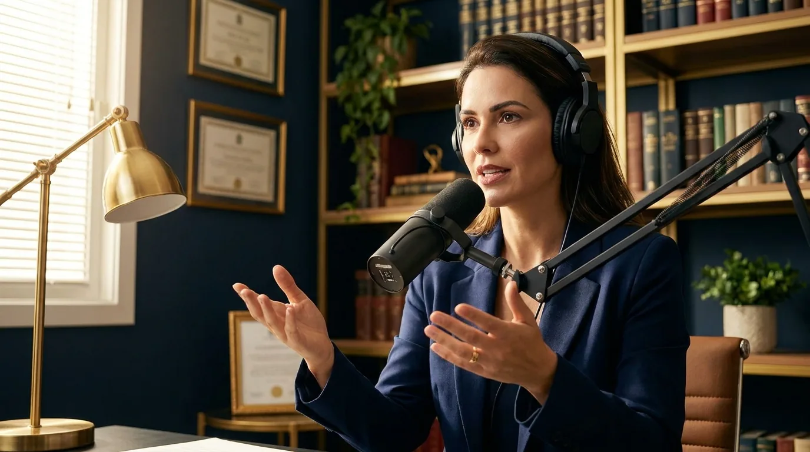
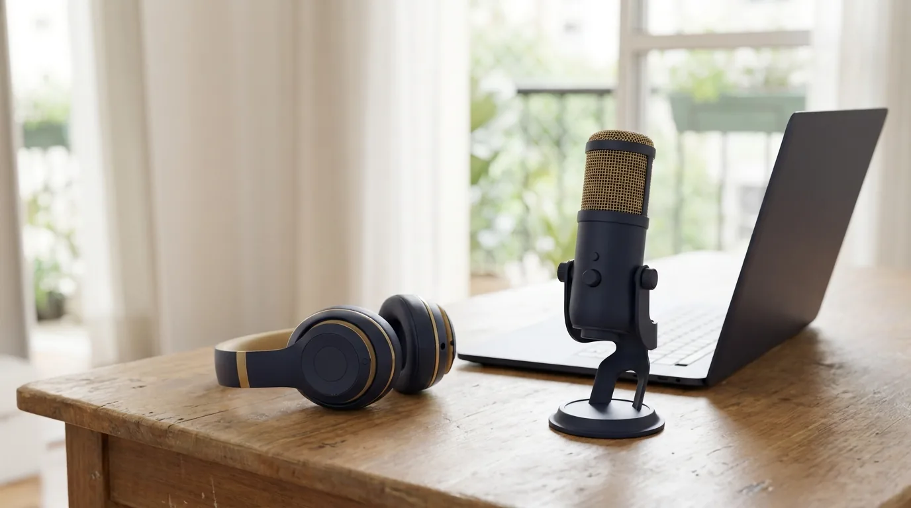
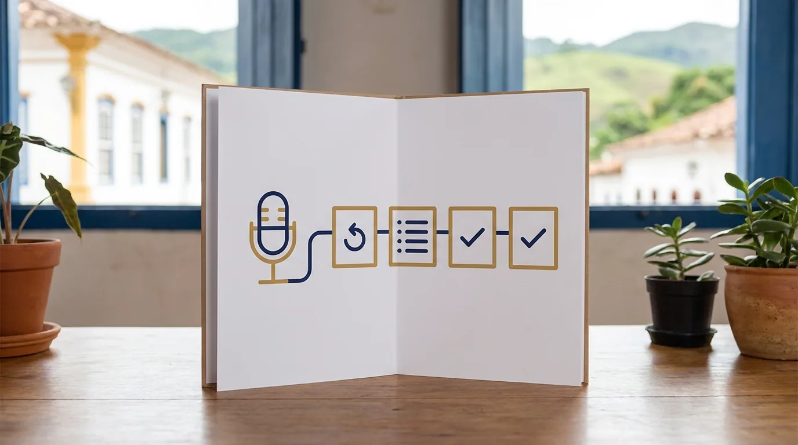
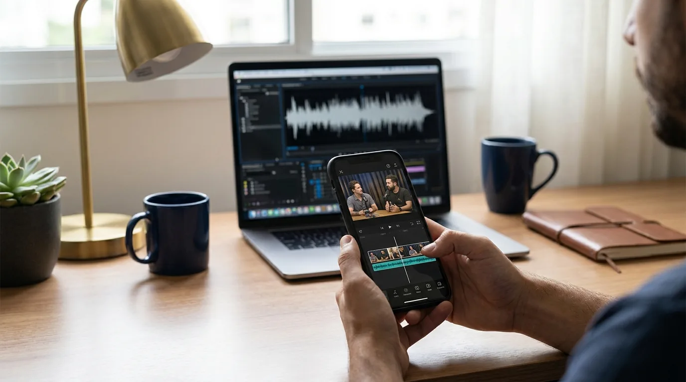

Podcast Jurídico: Como Criar o do Seu Escritório

O brasileiro escuta podcast no carro, na academia e na fila do fórum. O formato virou companhia diária de milhões de pessoas, e uma fatia crescente desse público é exatamente quem o seu escritório quer alcançar: empresários, profissionais e cidadãos com problemas jurídicos reais.
Enquanto isso, a maioria dos advogados segue disputando os mesmos trinta segundos de atenção em posts de rede social. O podcast jurídico anda na contramão: entrega dez, vinte minutos de atenção contínua de uma pessoa com fone no ouvido, sem concorrente rolando na tela.
Autoridade se constrói assim, com profundidade e constância. E poucos formatos entregam as duas coisas com custo de entrada tão baixo.
Este guia é de execução, não de teoria. Você vai ver o que a OAB permite, qual equipamento comprar (e qual não comprar), como definir formato e pauta, onde publicar, como fatiar cada episódio em conteúdo para a semana inteira e como medir se o podcast jurídico está trazendo cliente de verdade.
Por que podcast funciona na advocacia (e o que a OAB permite)
Comecemos pela lógica. O cliente jurídico contrata confiança: ele precisa acreditar que você domina o assunto antes de entregar o problema. Texto constrói isso aos poucos; a voz acelera o processo, porque carrega tom, segurança e naturalidade que nenhum parágrafo transmite.
Há também o efeito de seleção. Quem escuta meia hora de conversa sobre direito trabalhista tem interesse real no tema. O podcast jurídico atrai menos curiosos e mais gente com problema concreto, o oposto do alcance raso das redes.
E existe o fator concorrência: pouquíssimos escritórios produzem áudio com constância. Na sua área e na sua região, há uma boa chance de o espaço estar simplesmente vazio.
O que a OAB permite no podcast
A regra é a mesma de todo o marketing jurídico: o Provimento 205/2021 autoriza conteúdo informativo e educativo, com moderação e sem mercantilização.
Na prática do podcast jurídico, isso significa:
- Pode: explicar temas jurídicos, comentar mudanças de lei e decisões públicas em tese, entrevistar convidados, contar como a área funciona, divulgar o episódio nas redes e até impulsionar esse conteúdo
- Não pode: prometer resultado, divulgar preços e promoções, usar caso de cliente identificável sem autorização expressa, fazer apelo direto de contratação ("me contrate", "ligue agora") ou sensacionalismo com dor alheia
⚠️ ATENÇÃO: O maior risco do podcast jurídico não está no que você planeja, e sim no improviso. Ao vivo na conversa, escapa um "isso aí é vitória garantida" ou um caso de cliente com detalhes reconhecíveis, e a infração está gravada e distribuída. Defina antes as linhas que não cruza e edite sem dó o que escapar.
Convidado no episódio também pede cuidado. A fala do entrevistado sai no seu podcast jurídico, com a sua marca, e um convidado empolgado prometendo resultado compromete o programa inteiro. Alinhe as regras antes de gravar e mantenha o direito de cortar na edição o que ferir o Provimento.
A camada ética, bem entendida, vira vantagem: o formato informativo que a OAB exige é exatamente o formato que constrói autoridade. As regras empurram você para o conteúdo certo.
Equipamento mínimo e custo real

Aqui vai a notícia que ninguém dá: você não precisa de estúdio. Precisa de áudio limpo, e áudio limpo se resolve com pouco dinheiro e um ambiente silencioso.
| Nível | O que compõe | Investimento aproximado |
|---|---|---|
| Essencial | Microfone USB de qualidade, fone, ambiente tratado com cortina e tapete, gravação no computador | R$ 300 a R$ 800 |
| Intermediário | Microfone dinâmico (capta menos ruído do ambiente) com interface de áudio (o aparelho que o liga ao computador), braço de mesa, filtro pop (tela que corta o estouro dos "p" e "b"), iluminação básica para vídeo | R$ 1.500 a R$ 3.500 |
| Avançado | Dois ou mais microfones, câmeras para versão em vídeo, mesa de som, sala tratada | R$ 5.000 em diante |
Quando for comprar, comece pelo essencial. O salto de qualidade que o ouvinte percebe está entre o áudio do celular no viva-voz e o microfone USB decente; dali para cima, o retorno diminui rápido.
Duas regras de ouro do áudio: grave perto do microfone, num cômodo com pouco eco, e use fone durante a gravação para ouvir o que está entrando. Esses dois hábitos gratuitos melhoram mais o resultado do que qualquer upgrade de equipamento.
Sobre o local, a lógica é simples: quanto mais coisa macia no ambiente, melhor o som. Quarto com cama, cortina e guarda-roupa soa melhor que sala ampla de piso frio. Escolha também o horário: gravar às sete da manhã de sábado elimina de graça o vizinho da furadeira e o trânsito da janela.
💡 DICA VALIOSA: Antes de comprar qualquer coisa, grave um episódio piloto com o que você tem, nem que seja o fone do celular. O piloto revela o que equipamento nenhum resolve: se você tem assunto, se consegue conversar com naturalidade e se a rotina de gravar cabe na sua agenda. Equipamento se compra depois da prova de constância.
Formato, pauta e frequência do podcast jurídico
Antes do formato, o batismo. Escolha um nome claro, que diga o tema, e mantenha. Capa profissional, descrição com as palavras que o público busca e o nome do escritório presente, com sobriedade, em cada episódio.
Quanto ao formato em si, a regra é uma: formato certo é o que você consegue sustentar por meses. As três opções principais:
| Formato | Como funciona | Esforço | Melhor para |
|---|---|---|---|
| Solo | Você explica um tema por episódio, 10 a 20 minutos | Baixo | Começar rápido e manter constância |
| Entrevista | Conversa com convidado (colega, contador, cliente-perfil) | Médio | Ampliar audiência com a rede do convidado |
| Comentário de atualidade | Análise de mudanças de lei e casos públicos da semana | Médio-alto | Virar referência de acompanhamento na área |
O erro clássico do iniciante é começar com entrevistas semanais de uma hora. Agenda de convidado atrasa, edição pesa e o projeto morre no episódio oito. O caminho mais seguro: episódios solo curtos, quinzenais, com um tema bem resolvido em cada um.
A pauta que atrai cliente, não colega
Aqui mora a decisão estratégica que separa podcast jurídico que gera negócio de podcast que gera aplauso de outros advogados: a pauta precisa responder às perguntas do seu cliente, na língua dele.
"A reforma do CPC e os embargos de divergência" atrai colegas. "Fui demitido, o que tenho direito a receber?" atrai cliente. Se a sua banca vive de empresas, "o que fazer quando o sócio quer sair da sociedade" vale mais que qualquer análise doutrinária.
A fonte de pauta mais rica está na sua rotina: as dúvidas que os clientes repetem na primeira reunião. Cada pergunta repetida é um episódio; se três clientes perguntaram, muitas outras pessoas estão digitando a mesma dúvida no Google. O nosso guia de conteúdo digital para advogados aprofunda essa lógica de pauta orientada a demanda.
A espinha de um episódio que prende

Um episódio solo de podcast jurídico funciona bem com quatro blocos. O gancho, nos primeiros trinta segundos: a pergunta ou a situação que o ouvinte reconhece ("você foi demitido e assinou tudo que puseram na sua frente?"). O contexto, em dois ou três minutos: por que esse tema importa e o que está em jogo.
O desenvolvimento vem em seguida, com no máximo três pontos principais. Mais que isso, o ouvinte esquece o primeiro antes de chegar ao último. E o fechamento: resumo em três frases e um recado final claro, dentro das regras, como "se esse é o seu caso, procure um advogado da área com estas informações em mãos".
Roteirize em tópicos numa página, nunca em texto corrido. O papel guia; a conversa flui.
Gravação, publicação e o aproveitamento nas redes
O fluxo de produção enxuto tem cinco passos: roteiro em tópicos (nunca texto lido, a leitura mata a naturalidade), gravação, edição básica (cortar erros, ajustar volume, inserir vinheta curta), publicação e distribuição.
Para publicar, você sobe o arquivo numa plataforma de hospedagem de podcast, o serviço que guarda o áudio e o envia automaticamente para os agregadores, que são os aplicativos onde as pessoas escutam, como Spotify, Apple Podcasts e Deezer. Há opções gratuitas e de baixo custo. O YouTube fica fora desse envio automático: lá a publicação é à parte, em vídeo ou como áudio com imagem estática, e vale o esforço, porque é uma das maiores casas de podcast do Brasil. Título de episódio é busca: "Herança: quem tem direito e em que ordem" trabalha para sempre no seu lugar.
Publique também a transcrição. As ferramentas de IA transcrevem um episódio em minutos, e esse texto, revisado, vira a versão em post no blog. O Google não ouve áudio, mas lê transcrição, e é assim que o podcast jurídico passa a aparecer também nos resultados de busca, junto com os sites.
Um episódio, uma semana de conteúdo

O podcast jurídico rende mais fora do player do que dentro dele. De cada episódio de vinte minutos saem:
- Três a cinco cortes de um minuto, os melhores momentos, para Reels (os vídeos curtos do Instagram), Shorts (os do YouTube) e TikTok
- Um post escrito para o blog do site, otimizado para a busca, com o episódio embutido na página para o visitante dar o play ali mesmo
- Publicações para o LinkedIn e o Instagram com as ideias centrais
- Material para a newsletter ou lista de transmissão do escritório
Esse desdobramento é o que transforma vinte minutos de gravação em presença digital da semana inteira. Se a produção dos cortes parecer trabalhosa, a inteligência artificial já resolve boa parte, como mostramos no guia de vídeos para advogados com IA.
E se o seu gargalo for tempo mesmo, existe caminho: a JuriDigital cuida da engrenagem completa de conteúdo de escritórios pelo Brasil, do planejamento de pauta à distribuição. Você grava; o resto anda sozinho. Converse com o nosso time.
Como medir se o podcast está funcionando
Downloads impressionam, mas não pagam boleto. A audiência que interessa é a que vira reunião marcada, e ela se enxerga em camadas. A medição séria do podcast jurídico olha três camadas.
A primeira é a audiência: plays por episódio e, principalmente, retenção (quanto do episódio as pessoas ouvem). Retenção alta com audiência pequena vale mais que o contrário, porque indica conteúdo certo para público certo.
A segunda é o transbordo digital: crescimento de seguidores, visitas ao site vindas dos cortes e dos posts derivados, inscritos na newsletter. O podcast alimenta o ecossistema inteiro.
Nessa camada, observe também os convites que começam a chegar. Palestra em evento da subseção, participação no podcast jurídico de um colega, pedido de comentário de um jornalista: são sinais de que a autoridade saiu da bolha dos ouvintes e entrou no circuito da profissão. Esse efeito indireto costuma render tanto quanto o direto.
A terceira é a que importa: contatos que citam o podcast. Inclua no seu formulário e na triagem a pergunta "como conheceu o escritório?". Quando "ouvi seu podcast" começar a aparecer, o ciclo se fecha: é gente que chega meio convencida, sem pechinchar, porque já passou horas com a sua voz explicando o assunto.
🚀 OPORTUNIDADE: O ouvinte de podcast chega diferente do contato que vem de anúncio. Ele já ouviu você por horas, conhece seu jeito de pensar e confia antes do primeiro contato. É o cliente que menos negocia preço e mais indica, e cada episódio publicado segue trabalhando por anos na busca do Spotify e do YouTube.
Se quiser essa medição montada com método, do rastreio da origem dos contatos ao funil completo do episódio até a contratação, esse desenho é trabalho que a JuriDigital faz no dia a dia. Uma conversa com o nosso time mostra o que dá para medir já no primeiro mês.
Dê ao projeto o prazo justo: seis meses de constância antes de julgar. Podcast é ativo de acumulação, não campanha de resposta rápida. Os primeiros episódios falam com dezenas de pessoas; os mesmos episódios, um ano depois, seguem sendo descobertos por quem pesquisa o tema, e a audiência acumulada muda de escala sem esforço novo.
Perguntas frequentes sobre podcast jurídico
Advogado pode ter podcast?
Pode. O Provimento 205/2021 da OAB autoriza expressamente o marketing de conteúdo informativo e educativo, e o podcast é um dos formatos mais adequados a essa regra. As vedações são as de sempre: sem promessa de resultado, sem preços, sem captação ostensiva e sem sensacionalismo.
Posso falar de casos no meu podcast jurídico?
Em tese e sem identificação, sim: comentar decisões públicas e explicar teses é conteúdo legítimo. Caso do próprio cliente exige autorização expressa e, mesmo assim, cautela redobrada com detalhes que permitam reconhecimento. Na dúvida, transforme o caso em exemplo hipotético.
Quanto custa montar um podcast jurídico?
Dá para começar bem com R$ 300 a R$ 800, num setup de microfone USB, fone e ambiente silencioso. A plataforma de hospedagem, o serviço onde você sobe os episódios, tem planos gratuitos ou de baixo custo. O investimento real é tempo: no começo, umas três a quatro horas por episódio entre pauta, gravação, edição e divulgação.
Qual a frequência ideal dos episódios?
A que você sustenta sem falhar. Quinzenal é o equilíbrio para a maioria dos escritórios: presença constante sem sufocar a agenda. Melhor vinte episódios quinzenais publicados no ano do que um plano semanal abandonado em março.
Preciso aparecer em vídeo ou só o áudio basta?
Só o áudio já funciona, mas a versão em vídeo multiplica o alcance: o YouTube é hoje uma das maiores plataformas de podcast do Brasil e os cortes em vídeo alimentam as redes. Se a câmera intimidar, comece só no áudio e evolua.
Podcast jurídico traz cliente mesmo?
Traz, pelo caminho da confiança acumulada: o ouvinte chega ao escritório já convencido da sua autoridade. O efeito é de médio prazo e depende de pauta orientada ao cliente (não a colegas), constância e distribuição dos cortes nas redes. Meça pela pergunta "como conheceu o escritório?".
Aperte o gravar antes de estar pronto
Recapitulando o essencial do podcast jurídico: a OAB permite e o formato favorece o conteúdo informativo; o equipamento de entrada custa menos que um jantar de fechamento de contrato; pauta boa nasce das dúvidas reais dos seus clientes; cada episódio vira uma semana de conteúdo; e o resultado se mede em contatos que chegam citando a sua voz.
O que separa os escritórios que colhem tudo isso dos que ficam na intenção é uma decisão pouco glamourosa: gravar o episódio um, imperfeito, e o dois em seguida. Autoridade em áudio é maratona, e maratona se vence com constância.
E se você quiser correr a maratona com equipe de apoio, a JuriDigital monta a estratégia completa: pauta, identidade, distribuição e a conversão dos ouvintes em clientes. Fale com a nossa equipe e coloque a voz do seu escritório onde os seus clientes já estão ouvindo.